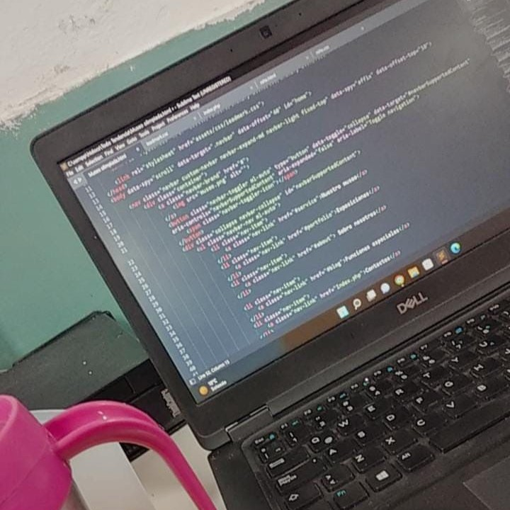
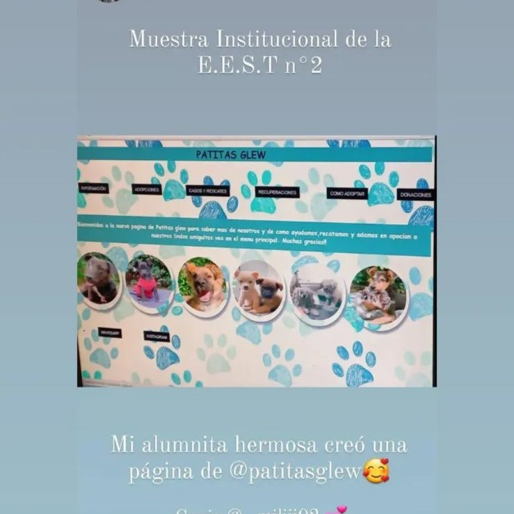
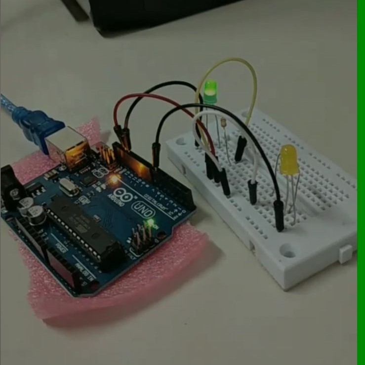
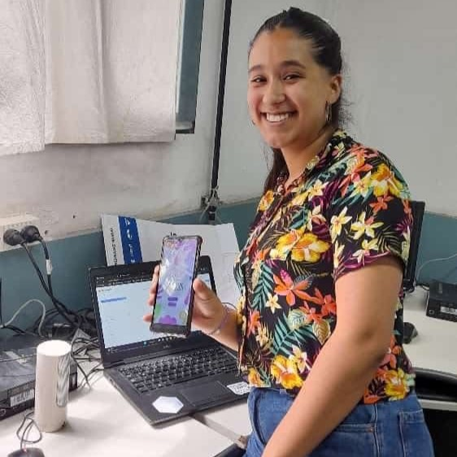
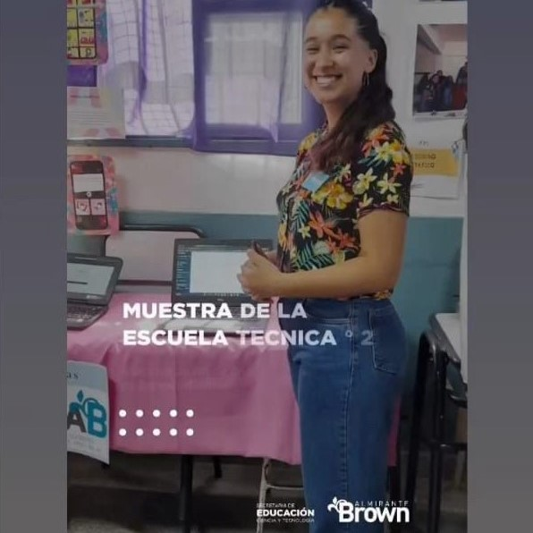
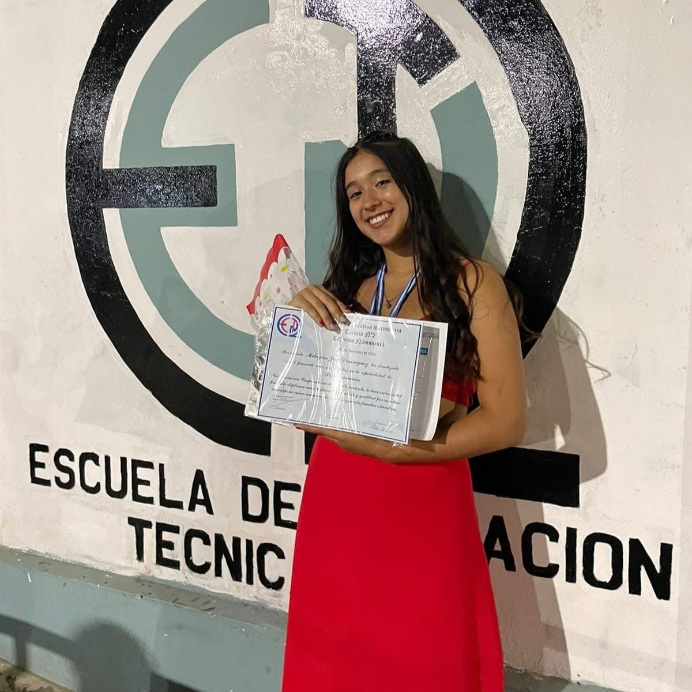

Un poco sobre mí
Este espacio es para contarle un poco de lo que me representa a mí como estudiante y futura Diseñadora Gráfica, donde voy a mostrarles un poco de todo lo que me reprensetan tanto como persona y mis intereses propios en el diseño.Mi idea principal es mostrarles lo que me interesa especialmente, de como explorar diseño y como puede transformar una idea en una experiencia visual, combinando creatividad, comunicación y una identidad propia. A lo largo de mi formación fui descubriendo diferentes áreas y formas de trabajar, enfrentándome a nuevos desafíos y aprendiendo de cada proyecto.
Este espacio reúne una parte de mi recorrido mis intereses y algunos de los trabajos que fui desarrollando. Cada proyecto representa una etapa diferente y una oportunidad para experimentar, aprender y seguir creciendo dentro del mundo del diseño. Te invito a seguir recorriendo mi portfolio para conocer un poco más sobre mí y sobre todo lo que tengo para crear.
Conoceme más
MIS COMIENZOS
¿QUIÉN SOY YO?.
Mi nombre es Milagros Dominguez, actualmente tengo 22 años y soy estudiante de la carrera de Diseño y Comunicacion visual en la Universidad Nacional de Lanús. Pero ¿cómo es que llegue a decidir que tipo de carrera queria hacer?.La realidad es super distinta a lo que todos pensamos, yo era estudiante en una escuela técnica y soy recibida de la carrera de Técnica en Progración, pero a lo largo de mi cursada me di cuenta que me desempeñaba mucho en el área del Diseño y creatividad, sin darme cuenta empece a tomar decisiones gráficas utilizando propiedad y el "ojo" creatívo del diseño.






A lo largo de este tiempo pude desarrollar un gran aprendizaje en el ambito de la programación utilizando distintos lenguajes del mismo como HTML, CSS, PHP, C++, Phyton, entre otros que me permitieron poder realizar páginas web (prototipos) para Patitas Glew y mis comienzos con Arduino. Además de poder aprender algunos lenguajes, también tuve la oportunidad de programar en bloques realizando apps desde un sistema llamada AppInventor o Thunkable. Gracias a eso pude desarrollar una aplicación para niños con TEA (Transtorno del Espectro Autista) ayudandolos a poder comunicarse, ya que es una situación bastante compleja para algunas familias poder hacer que los niños se comuniquen de alguna manera.
Este proyecto fue pensado y usado para aquellas familias que lo necesiten a la hora de intentar comunicarse utilizando un sitema de pictograma.Cada pictograma era una acción, un adjetivo o algo que desearas comunicar. Al precionar el el boton podía reproducirse por el parlante del teléfono lo que quisieran decir.
PORTAFOLIO
Proyectos y Trabajos Prácticos
Trabajos Practicos
"DESCRIPCION DEL PROYECTO, TENGO QUE SELECCIONAR LOS PROYECTO Y COLOCAR LAS IMAGENEES"
EDUCACIÓN
Estudio Primario
Nuevo Colegio GLew
2007 - 2015
Estudio Secundario
Escuela Superior Tecnica N°2
2016 - 2022
Titulo de Técnica en Programación
CONTACTO
Email: Milagrosdominguez043@gmail.com
Teléfono: 1159778647
Instagram: mili.dominguez._
Instagram: mido.dg_
Behance